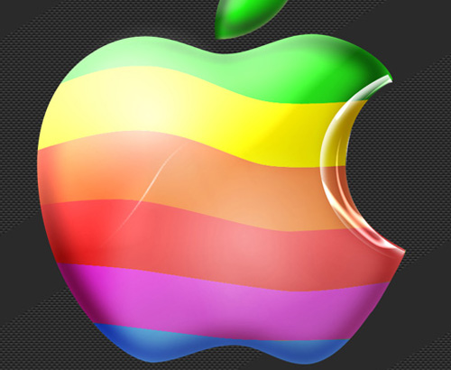
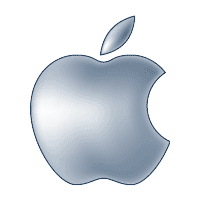
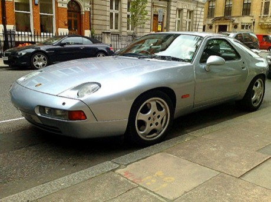
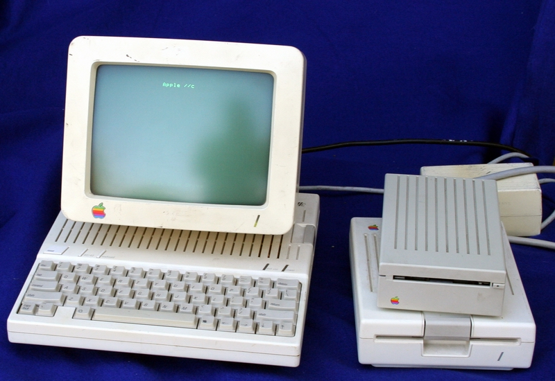

Chương 11

hông giống như những đứa trẻ lớn lên ở Eichler, Jobs biết họ là ai và tại sao họ lại tuyệt vời đến thế. ông thích những quan điểm hiện đại rõ ràng và dễ hiểu dành cho công chúng. Ngoài ra ông ấy còn thích lắng nghe cha mình mô tả về sự đặc sắc mà phức tạp của nhiều loại xe hơi. Chính vì thế, ngay từ những ngày đầu của Apple, ông đã tin rằng một thiết kế lớn mang tính công nghiệp, logo đơn giản và chiếc vỏ nuột nà cho Apple II có thể làm cho công ty nổi bật và những sản phẩm làm ra sẽ mang nét độc đáo, riêng biệt.

Mac logo thời kì đầu...
Văn phòng đầu tiên của công ty khi mới chuyển đi từ gara của gia đình ông được đặt tại một tòa nhà nhỏ và còn phải chung đụng với một văn phòng bán lẻ của hãng Sony. Hãng Sony thì đã quá nổi tiếng với phong cách tạo dấu ấn và những mẫu thiết kế thật sự đáng nhớ. Và qua họ, Jobs cũng học được rất nhiều yếu tố của việc marketing. “Jobs thường chú ý ngay đến những cái gì không theo chuẩn mực và nâng niu những cuốn cẩm nang về sản phẩm và chỉ ra ngay những tính năng thiết kế”, theo lời Dan‟1 Lewin, một nhân viên từng làm ở đó. Thỉnh thoảng Jobs còn nói,
“Tôi có thể lấy cuốn cẩm nang này chứ?”, Dan‟1 tiếp lời. Jobs đã thuê Dan‟1 làm việc từ sau năm 1980.
Sự yêu mến của Jobs dành cho những sản phẩm với màu sắc và diện mạo tối tăm, xám xịt của hãng Sony giảm sút vào khoảng tháng Sáu năm 1981, khi ông bắt đầu chú ý đến Cuộc hội thảo quốc tế về thiết kế thường niên ở Aspen. Cuộc họp năm đó chủ yếu tập trung và những thiết kế mang phong cách Italy và đề cao nhà thiết kế Mario Benllini, nhà làm phim Bernardo Bertolucci, nhà thiết kế xe hơi Sergio Pininfarina và nữ chính trị gia Susanna Agnelli - người thừa kế nhà Fiat.
“Tôi xin bày tỏ lòng tôn kính trước những nhà thiết kế Italy như một đứa trẻ trong tác phẩm Breaking Away thích thú trước những chiếc xe đạp Italy”, Jobs nhớ lại, “thật là một sự khơi nguồn cảm xúc đáng kinh ngạc”.
ở Aspen, Jobs đã biết thêm được những quan điểm mở và thiết thực trong triết lý thiết kế theo trường phái Bauhaus mà Herbert Bayer đã áp dụng vào thiết kế những tòa nhà, những dãy phòng ngủ với kiểu trình bày chữ in không chân và những đò nội thất trong học viện ở Aspen.
Cũng giống như hai người thầy Walter Gropius và Ludwig Mies van der Rohe, Bayer tin rằng không nên có sự phân biệt giữa nghệ thuật tạo hình và những thiết kế công nghiệp. Phong cách thiết kế quốc tế theo chủ nghĩa tân thời được bảo trợ bởi trường phái Bauhaus đã chỉ ra rằng nhưng thiết kế đó nên đơn giản và biểu đạt được ý nghĩa tinh thần. Nó nhấn mạnh tính hợp lý và khả dụng có được từ việc sử trường phái Bauhaus, sẽ chân thực hơn theo chức năng và tính chất của sản phẩm. “Điều mà chúng tôi sẽ thực hiện là chế tạo những sản phẩm này với công nghệ cao và đóng gói chúng thật gọn gàng, cân đối để các bạn có thể biết rằng chúng thực sự là hàng công nghệ cao.
Chúng tôi sẽ đưa chúng vừa vặn vào những gói nhỏ, và làm cho chúng trở nên thật đẹp và có màu trắng, giống như hãng Braun đã làm với thiết bị điện tử của họ.” Jobs đã nhiều lần nhấn mạnh rằng sản phẩm của Apple sẽ thật gọn gàng và đơn giản.

...vá logo rõ ràng đơn giản của hiện tại
“Chúng tôi sẽ làm cho chúng trông thật tươi sáng, thuần khiết và phản ánh chân thật rằng đó thực sự là công nghệ cao chứ không phải là một vẻ ngoài nặng nề với chỉ màu đen ròi lại màu đen và màu đen, như Sony đã làm”, Jobs nói. “Đó là cách tiếp cận của chúng tôi. Rất đơn giản. Chúng tôi đang thực sự làm cho những sản phẩm của mình có chất lượng như những vật được trưng bày ở Bảo tàng Nghệ thuật Đương đại. Cách chúng tôi điều hành công ty, thiết kế sản phẩm, quảng cáo, mục đích cuối cùng là làm cho nó đơn giản. Thật đơn giản.” Phương châm thiết kế “Đơn giản là sự tinh tế nền tảng nhất” của Apple luôn được đề cao như một đặc trưng trên tập quảng cáo của công ty.
Jobs thấy rằng thiết kế đơn giản nên nối kết với việc làm cho sản phẩm dễ sử dụng. Nhưng những mục tiêu đó không phải lúc nào cũng luôn song hành với nhau. Đôi khi một thiết kế có kiểu dáng đẹp và đơn giản lại khiến người dùng cảm thấy thật đáng sợ hay khó sử dụng. Jobs nói với các chuyên gia thiết kế: “Điểm cơ bản trong thiết kế của Apple là chúng tôi phải làm mọi thứ trở nên thật rõ ràng qua trực giác.” Ví dụ, ông ca ngợi giao diện màn hình nền máy tính mà ông đã tạo ra cho chiếc Macintosh. “Mọi người biết làm thế nào để sử dụng một màn hình nền máy tính bằng trực giác. Luôn có giấy tờ trên bàn làm việc trong văn phòng. Tờ giấy trên cùng là quan trọng nhất.
Mọi người biết làm sao để chuyển đổi các ưu tiên của mình. Một phần lý do chúng tôi thiết kế như vậy là nhờ đó chúng tôi có thể tận dụng những kinh nghiệm mà mọi người đã có.” Phát biểu cùng lúc với Jobs trong buổi chiều thứ Tư hôm ấy, nhưng trong một phòng hội thảo nhỏ hơn, là Maya Lin, 23 tuổi, người đã đã nhanh chóng nổi tiếng vào tháng Mười một năm trước đó khi tên cô được khắc trên bia tưởng niệm cựu chiến binh Mỹ tại Việt Nam ở Washington, D.c. Họ đã có một tình bạn thắm thiết, và Jobs mời cô đến thăm Apple. Lin nhớ lại: “Tôi đến làm việc với Steve trong một tuần. Tôi hỏi anh, Tại sao máy tính trông lại giống như một cái ti vi còng kềnh? Tại sao anh không làm một cái gì đó mỏng hơn? Tại sao không phải là một máy tính xách tay phẳng?‟”. Jobs trả lời rằng đây là thực sự mục tiêu của mình, ngay khi công nghệ đã hoàn toàn sẵn sàng.
Jobs cảm thấy rằng vào thời điểm đó không có nhiều điều thú vị xảy ra trong lĩnh vực thiết kế công nghiệp, ông đã có một chiếc đèn của Richard Sapper mà ông rất ngưỡng mộ thiết kế của nó, ông cũng thích các đò nội thất của Charles và Ray Eames cũng như các sản phẩm Braun của Dieter Rams. Tuy nhiên, không có những tượng đài xuất chúng để truyền cảm hứng cho cả giới thiết kế công nghiệp như Raymond Loewy và Herbert Bayer đã từng làm. Lin nói: “Thực sự là không có nhiều phát hiện mới trong lĩnh vực thiết kế công nghiệp, đặc biệt là ở thung lũng Silicon, và Steve đã rất muốn thay đổi điều đó. Phong cách thiết kế của ông là thiết bị có kiểu dáng đẹp nhưng không quá bóng bẩy, và nó phải rất vui tươi. Steve hướng tới chủ nghĩa tối giản, điều đến từ lòng sùng kính trong Thiền phái của ông đối với sự đơn giản, nhưng ông đã tránh để sự sùng kính ấy làm cho cho sản phẩm của mình trở nên lạnh lẽo. Chúng mang đến sự vui tươi. Ông đam mê và cực kỳ nghiêm túc đối với thiết kế, nhưng đồng thời có một chút đùa vui trong đó.” Khi sự nhạy cảm trong thiết kế của ông phát triển, ông trở nên đặc biệt quan tâm tới phong cách Nhật Bản và bắt đầu giao thiệp với những nhân vật nổi tiếng với phong cách đó, chẳng hạn như Issey Miyake và IM Pei. Quá trình rèn luyện Phật giáo của Jobs cũng có ảnh hưởng lớn tới ông. ông nói: “Tôi đã luôn tìm thấy trong Phật giáo nói chung và Thiền giáo Nhật Bản nói riêng sự tuyệt vời về mặt thẩm mỹ. Điều tuyệt vời nhất mà tôi từng thấy là các khu vườn xung quanh Kyoto.
Tôi vô cùng xúc động bởi những gì mà nền văn hóa đó đã sản sinh, và những điều ấy trực tiếp bắt nguồn từ Thiền giáo.”
Như một chiếc Porsche
Hình dung của Jef Raskin về chiếc máy tính Macintosh là nó sẽ giống như một chiếc vali xách tay hình hộp, có thể được đóng lại bằng cách lật bàn phím úp vào màn hình phía trước. Sau khi tiếp nhận dự án, Jobs quyết định hy sinh tính linh động đó bằng một thiết kế đặc biệt sẽ không chiếm nhiều không gian trên bàn. ông đặt một cuốn danh bạ điện thoại xuống và tuyên bố trong sự kinh ngạc của các kỹ sư, rằng nó không nên có một kích cỡ lớn hơn. Vì vậy, nhóm thiết kế của ông, gồm Jerry Manock và Terry Oyama, bắt đầu làm việc dựa trên ý tưởng thiết kế một chiếc máy tính có những màn hình ở phía trên cây máy tính, với một bàn phím có thể tháo rời.
Tháng Ba năm 1981, Andy Hertzfeld trở lại văn phòng sau bữa ăn tối và thấy Jobs dùng một nguyên mẫu Mac của họ trong cuộc thảo luận căng thẳng với giám đốc sáng tạo James Ferris.
Jobs nói: “Chúng tôi muốn nó có một vẻ ngoài cổ điển, giống như một chiếc Volkswagen Beetle vậy.” Do ảnh hưởng từ cha mình, Jobs luôn đánh giá cao các đường nét của những chiếc xe cổ điển.
Ferris đáp: “Không được. Những đường nét phải thật gợi cảm như một chiếc Ferrari.” Jobs phản đối: “Không thể là một chiếc Ferrari mà phải giống như một chiếc Porsche!” Jobs có một chiếc Porsche 928 vào thời điểm đó. Khi gặp Bill Atkinson vào một ngày cuối tuần, Jobs đã đưa Atkinson ra ngoài để chiêm ngưỡng chiếc xe. Jobs nói với Atkinson: “Nghệ thuật vĩ đại sẽ gây ảnh hưởng chứ không đi theo thị hiếu.” Jobs cũng ngưỡng mộ các thiết kế của Mercedes. Một hôm, khi đang đi bộ xung quanh các bãi đỗ xe, Jobs nói: “Qua nhiều năm, họ đã làm cho các đường nét trở nên mềm mại hơn trong khi các chi tiết thì đơn giản hơn. Đó là những gì chúng ta phải làm với những chiếc máy tính Macintosh.”

Porsche 928
Oyama đã phác thảo một thiết kế sơ bộ và thực hiện một mô hình bằng thạch cao. Nhóm chế tạo tập trung lại và bày tỏ suy nghĩ của mình. Hertzfeld gọi điều đó là “dễ thương”. Những người khác cũng tỏ vẻ hài lòng. Thế nhưng sau đó Jobs lại chỉ trích họ nặng nề: “Nó quá cứng nhắc, nó cần phải tròn trịa hơn. Bán kính của mặt vát đầu tiên cần lớn hơn, và tôi không thích kích thước của góc xiên.” Với sự lưu loát trong ngôn ngữ thiết kế công nghiệp, Jobs đã đề cập đến các góc hoặc cạnh cong để kết nối các bên của máy tính. Nhưng sau đó ông đã đưa ra một lời khen ngợi vang dội. “Đó là một sự khởi đầu”, Jobs nói.
Hàng tháng, Manock và Oyama sẽ trình bày một bản chỉnh sửa mới dựa trên những lời chỉ trích trước đó của Jobs. Mô hình thạch cao mới nhất sẽ được công bố, và tất cả các thiết kế từ những nỗ lực trước đó sẽ được xếp thành hàng bên cạnh. Điều đó không chỉ giúp họ đánh giá sự tiến triển của thiết kế, mà còn đảm bảo với Jobs rằng không một gợi ý nào của ông bị bỏ qua.
Hertzfeld nói: “Tôi đã gần như không thể phân biệt được mô hình thứ tư với mô hình thứ ba, nhưng Steve đã luôn khó tính và quyết đoán khi nói rằng mình yêu hay ghét một chi tiết mà tôi khó khăn lắm mới có thể cảm nhận được.”
Vào một dịp cuối tuần, Jobs tới của hàng Macy‟s ở Palo Alto và một lần nữa dành thời gian nghiên cứu các thiết bị, đặc biệt là các sản phẩm Cuisinart. ông đã đến văn phòng của Mac vào hôm thứ Hai tuần kế tiếp, yêu cầu nhóm thiết kế đi mua một chiếc, và đưa ra một loạt các đề xuất mới dựa trên các đường nét, đường cong và đường xiên của sản phẩm.
Jobs liên tục nhấn mạnh rằng chiếc máy trông phải thật thân thiện. Do đó, nó đã được phát triển để mô tả một khuôn mặt người. Với các ổ đĩa được thiết kế ở bên dưới màn hình, chiếc máy tính này đã cao hơn và hẹp hơn so với hầu hết các máy tính khác, và nó thể hiện hình một cái đầu.
Hốc lõm phía dưới máy tính gợi đến hình dạng chiếc cằm, và Jobs thu hẹp dải nhựa ở phần đầu để tránh cho chiếc máy mang vẻ ngoài giống như trẤn của người Neanderthal, điều đó sẽ làm cho Lisa trở nên thiếu hấp dẫn. Các bằng sáng chế cho thiết kế bề ngoài của Apple đã ghi tên của cả Steve Jobs cũng như Manock và Oyama. Oyama sau đó cho biết: “Mặc dù Steve đã không phác ra bất cứ đường nét nào, nhưng ý tưởng và cảm hứng của anh ấy làm cho thiết kế được như ngày nay.
Thú thật là chúng tôi không biết thế nào là một chiếc máy tính „thân thiện‟ cho đến khi Steve chỉ cho chúng tôi.”
Jobs bị ám ảnh với cường độ cân bằng các giao diện của những gì sẽ xuất hiện trên màn hình. Một ngày nọ, Bill Atkinson đã rất sung sướng khi tới Texaco Towers, ông đã đưa ra một thuật toán thông minh để có thể vẽ hình tròn và bầu dục trên màn hình một cách nhanh chóng. Phép toán để thực hiện hình tròn thường được yêu cầu tính căn bậc hai, điều mà bộ vi xử lý 68000 không hỗ trợ. Nhưng Atkinson đã đưa ra cách giải quyết dựa trên thực tế là tổng của một chuỗi các số lẻ tạo ra nhưng số chính phương hoàn hảo (ví dụ, 1 + 3 = 4, 1 + 3 + 5 = 9, v.v...). Hertzfeld nhớ lại rằng khi Atkinson đưa ra bản mẫu của mình, tất cả mọi người đã rất ấn tượng ngoại trừ Jobs, ông nói: “Được đấy, hình tròn và hình bầu dục cũng hay, nhưng làm thế nào để vẽ hình chữ nhật với các góc bo tròn?"
Atkinson giải thích rằng gần như không thể làm việc đó: “Tôi không nghĩ rằng chúng ta thực sự cần điều đó.” ông nhớ lại: “Tôi muốn giữ chuỗi đồ họa xiên và giới hạn chúng trong những mẫu nguyên bản mà thực sự cần thực hiện.”
Vừa nói Jobs vừa nhảy cẫng lên và trở nên quyết liệt hơn: “Hình chữ nhật với góc bo tròn ở khắp mọi nơi! Cứ nhìn xung quanh căn phòng này mà xem!” ông chỉ vào các bảng trắng, mặt bàn và các đồ vật khác hình chữ nhật với các góc bo tròn. “Và hãy nhìn ra bên ngoài, thậm chí còn có nhiều thứ hơn kìa, thực tế là khắp mọi nơi!” Jobs kéo Atkinson ra ngoài dạo bộ, chỉ vào cửa sổ xe, biển quảng cáo và các biển chỉ đường, ông nói: “Chỉ trong ba dãy nhà này thôi, chúng ta đã nhìn thấy mười bảy minh chứng. Tôi đã chỉ các bằng chứng ở khắp mọi nơi cho đến khi anh ấy đã hoàn toàn được thuyết phục.” Hertzfeld nhớ lại: “Cuối cùng khi anh ấy tới trước một biển hiệu „No Parking‟ (Cấm đỗ xe), tôi đã nói, „Được rồi, anh đã đúng, tôi thua rồi. Chúng ta cần một hình chữ nhật góc bo tròn làm nguyên bản!‟ Bill vui vẻ trở lại Texaco Towers buổi chiều hôm sau. Bản mẫu này của ông giờ có thể vẽ các hình chữ nhật với góc bo tròn rất đẹp với tốc độ cực nhanh.” Hộp thoại và cửa sổ trên Lisa và Mac, cũng như hầu hết các máy tính khác sau đó, cuối cùng đều được thiết kế với các góc bo tròn.
Từ các lớp học thư pháp mà Jobs được dự thính tại Reed, ông đã nảy sinh tình yêu với các kiểu chữ, những đường gạch chân và chữ không chân biến thể từ chúng, tỷ lệ khoảng cách và dãn dòng. Sau này, ông nói về lớp học đó của mình, “Khi chúng tôi thiết kế chiếc máy tính Macintosh đầu tiên, tất cả chúng đã quay trở lại với tôi. Do Mac được lập trình nhị phân, nó đã có thể đưa ra một chuỗi các phông chữ bất tận, từ những kiểu tao nhã, thanh thoát cho đến kỳ quặc, lạ lùng, và biểu hiện chúng từng điểm ảnh một trên màn hình.
Để thiết kế các phông chữ, Hertzfeld tuyển dụng một người bạn học phổ thông của mình từ khu ngoại ô Philadelphia, Susan Kare. Họ đặt tên cho các phông chữ theo tên các điểm dừng xe lửa trên tuyến chính của Philadelphia: Overbrook, Merion, Ardmore, và Rosemont. Jobs cho rằng cách thức này rất thú vị. Một buổi chiều muộn, ông bắt đầu nghiền ngẫm về tên của các phông chữ.
Jobs phàn nàn: “Chúng toàn mang tên các thành phố nhỏ mà chẳng mấy ai từng nghe đến. Chúng phải được đặt theo tên những thành phố lớn trên thế giới!” Vì thế, các phông chữ được đổi tên thành Chicago, New York, Geneva, London, San Francisco, Toronto, và Venice.
Markkula và một số người khác có vẻ không bao giờ đánh giá cao nỗi ám ảnh của Jobs đối với các kiểu chữ. Markkula nhớ lại: “Hiểu biết của Steve về phông chữ thật xuất sắc, và cậu ấy tiếp tục yêu cầu phải có những kiểu chữ thật đẹp. Tôi nói với Jobs, „Phông chữ ư? Chả nhẽ chúng ta không có những việc quan trọng hơn để làm à?‟” Thực tế là các kiểu thú vị của phông chữ Macintosh, khi kết hợp với máy in laser và khả năng đồ họa tuyệt vời, sẽ giúp đẩy mạnh ngành công nghiệp xuất bản và đem lại lợi ích kinh doanh cho Apple. Nó cũng cho phép tất cả những người bình thường, từ các nhà báo cho tới các bà mẹ biên tập thư tin, tới niềm vui khi hiểu biết về phông chữ, vốn từng chỉ dành cho các nhân viên in ấn hay các biên tập viên lão luyện.
Kare cũng phát triển các biểu tượng, chẳng hạn như thùng rác có thể dành cho việc loại bỏ các tập tin, giúp xác định giao diện đồ họa. Bà cùng Jobs thực hiện việc đó do họ đều có một linh cảm hướng tới sự đơn giản với mong muốn làm cho Mac trở nên thật linh hoạt. Bà nói: “Steve thường đến công ty vào cuối ngày, ông luôn muốn muốn biết có điều gì mới, và luôn có cảm nhận rất tốt về chi tiết hình ảnh.” Đôi khi, Jobs đến văn phòng vào sáng Chủ nhật, vì vậy lúc đó Kare cũng có động lực để làm việc ở công ty. Thi thoảng bà cũng gặp phải vấn đề. Jobs từ chối một đề xuất của bà về biểu tượng con thỏ, biểu trưng cho chức năng tăng tốc độ tỷ lệ nhấp chuột, ròi nói rằng các sinh vật có lông nhìn ”quá rực rỡ, phô trương”.
Jobs cũng dành sự quan tâm tương tự đối với những thanh tiêu đề trên cửa sổ và các văn bản. ông đã yêu cầu Atkinson và Kare làm đi làm lại cho đến khi nào ông cảm thấy ưng ý. Jobs cũng không thích những gì ở Lisa vì nó quá tối và cứng nhắc, ông muốn Mac trở nên trơn tru, mượt mà hơn. “Chúng tôi đã phải thực hiện đến 20 bản thiết kế khác nhau cho thanh tiêu đề trước khi ông ấy hài lòng,” Atkinson nhớ lại. Có thời điểm Kare và Atkinson phàn nàn về việc ông đã khiến bọn họ tốn quá nhiều thời gian vào làm những việc cỏn con trong khi họ còn bao nhiêu việc quan trọng hơn phải làm. Rất tức giận, Jobs hét lên: “Cậu có thể tưởng tượng ra việc phải nhìn vào nó hàng ngày không? Nó không phải là một việc nhỏ nhặt, mà là việc chúng ta cần phải làm cho tốt.” Chris Espinosa phát hiện ra một cách có thể làm thỏa mãn các yêu cầu về thiết kế và những hành vi điều khiển kỳ quái của Jobs. Là một trong những trợ tá đắc lực của Wozniak từ những ngày văn phòng còn đặt trong nhà để xe, Espinosa đã bị Jobs thuyết phục bỏ học ở Berkeley, khi lập luận rằng Espinosa sẽ luôn có cơ hội học tiếp nhưng lại chỉ có một cơ hội duy nhất để làm việc cho Mac. về phần mình, ông đã quyết định sẽ thiết kế một bảng tính cho máy tính. “Chúng tôi đều tập trung xung quanh Chris, vì ông đang trình bày về bảng tính này cho Steve và sau đó nín thở chờ đợi phản ứng của Steve,” Hertzfeld nhớ lại.
“Õ, đây mới chỉ là khởi đầu,” Jobs nói, “nhưng về cơ bản thì nó khá lộn xộn. Màu nền thì quá tối, một vài dòng có kích thước sai, còn các phím lại quá to.” Espinosa tiếp tục chỉnh sửa qua các lời chỉ trích của Jobs, ngày này qua ngày khác, với những sự điều chỉnh mới, ông lại phải nhận thêm những lời chỉ trích mới. Cuối cùng, vào một buổi chiều, Espinosa đã đưa ra cho Jobs một giải pháp của mình: “Phương pháp tự thiết kế máy tính cá nhân của Steve Jobs.” Nó cho phép người dùng điều chỉnh và cá nhân hóa giao diện của máy tính bằng cách thay đổi độ dày mỏng của các thanh, kích cỡ của các phím, hình nền và các thuộc tính khác. Thay vì chỉ cười, Jobs đã lao vào và bắt đầu thay đổi giao diện để phù hợp với sở thích của ông.
Sau khoảng 10 phút, ông đã biến nó theo cách mình muốn. Với thiết kế của Jobs, không ngạc nhiên khi nó được áp dụng vào Mac và duy trì ổn định trong 15 năm.
Mặc dù tập trung chủ yếu vào máy tính cá nhân Macintosh, Jobs cũng muốn tạo ra một kiểu thiết kế nhất quán cho các sản phẩm của Apple. Vì vậy, ông đã tổ chức một cuộc tuyển chọn những nhà thiết kế đẳng cấp thế giới cho Apple giống như nhà thiết kế Dieter Rams của Braun. Tên dự án “Snow White” (Nàng Bạch tuyết) không liên quan đến khiếu thẩm mỹ về màu sắc của ông mà chỉ bởi những sản phẩm tạo ra được đặt tên là “Seven Dwarfs” (Bảy Chú lùn). Người thắng cuộc là Hartmut Esslinger, một nhà thiết kế người Đức, người đã chịu trách nhiệm thiết kế ti vi màn hình phẳng của Sony. Jobs đã bay tới vùng Black Forest của Bavaria để gặp Esslinger và Jobs đã bị thuyết phục không chỉ bởi niềm đam mê của Esslinge mà còn ở cách ông ta lái chiếc xe hơi Mercedes với vận tốc hơn 160 km/h.
Mặc dù là người Đức, Esslinger đã đề xuất nên “có một chút gen Mỹ trong sản phẩm của Apple” mà có thể tạo ra một vẻ ngoài “California toàn cầu” lấy cảm hứng từ “phim ảnh Hollywood và âm nhạc kết hợp với một chút nổi loạn và sức hấp dẫn tự nhiên”. Nguyên tắc chỉ dẫn của ông “Tạo hình theo cảm xúc”, dựa theo câu châm ngôn quen thuộc “Hình dáng theo công năng”.
Esslinger đã chế tạo bốn mươi mô hình sản phẩm nhằm thể hiện ý tưởng của mình, và khi Jobs nhìn thấy chúng, ông đã tuyên bố rằng đây chính là những gì mình muốn thể hiện. Diện mạo của Bạch Tuyết đã được áp dụng ngay lập tức vào Apple llc, với những chiếc vỏ bọc màu trắng, những đường cong mềm mại uyển chuyển và những rãnh mỏng vừa để thông gió vừa để trang trí. Jobs gửi cho Esslinger một bản hợp đồng với điều kiện là ông sẽ chuyển đến California. Họ bắt tay nhau và theo cách nói không hề khiêm tốn của Esslinger là “cái bắt tay đó đã cho thấy sự hợp tác mang tính quyết định nhất trong lịch sử ngành công nghiệp thiết kế.” Frogdesign, công ty của Esslinger mở tại Palo Alto vào giữa năm ký hợp đồng trị giá 1,2 triệu đô-la mỗi năm với Apple, và từ đó, mọi sản phẩm của Apple đều kê khai đầy tự hào “Designed in California” (Được thiết kế tại California).

Apple llc
Jobs đã học được từ cha rằng dấu hiệu tiêu chuẩn của niềm đam mê và sự khéo léo chính là đảm bảo rằng ngay cả những khía cạnh tiểm ẩn của sản phẩm cũng phải đẹp đẽ, tinh tế. Sự bổ sung đáng chú ý trong triết lý đó manh nha khi Jobs quan sát tỉ mỉ một bảng mạch tích hợp các chip và các thành phần khác trong máy tính cá nhân Macintosh. Có lẽ chưa khách hàng nào để ý đến nó, nhưng Jobs đã bắt đầu xem xét nó một cách kỹ lưỡng về khía cạnh thẩm mỹ. “Nó thật đẹp”, ông nói. “Nhưng những con chip thật xấu xí, các đường nối thì lại sít sịt vào nhau.” Một trong những kỹ sư mới cắt ngang và hỏi tại sao đó lại là vấn đề. “Điều quan trọng duy nhất là nó hoạt động tốt như thế nào. Sẽ chẳng có ai nhìn vào cái bo mạch chủ cả.” Jobs phản ứng như thường lệ. “Tôi muốn nó phải đẹp nhất có thể, ngay cả khi nó nằm bên trong chiếc hộp. Một thợ mộc giỏi sẽ không sử dụng gỗ xấu cho mặt sau của chiếc tủ cho dù không ai nhìn thấy.” Trong một buổi phỏng vấn vài năm sau đó, sau khi Macintosh được tung ra thị trường, Jobs đã kể lại một bài học từ cha mình: “Nếu bạn là một thợ mộc và đang đóng một chiếc tủ đẹp đẽ, bạn sẽ không sử dụng một miếng gỗ dẤn cho mặt sau của chiếc tủ, mặc dù nó sẽ được ốp vào tường và không ai có thể nhìn thấy. Nhưng bạn thì lại trông thấy, vì vậy bạn sẽ sử dụng một miếng gỗ tốt để đóng vào phía sau chiếc tủ. Để bạn có được một giấc ngủ ngon lành, cần đòi hỏi cả thẩm mỹ lẫn chất lượng.
Từ Mike Markkula ông đã học được sự quan trọng của mẫu mã và cách trưng bày. Người ta đánh giá một quyển sách qua bìa của nó, vì thế đối với hộp đựng của Macintosh, Jobs đã chọn một thiết kế nhiều màu sắc và cố gắng khiến cho chúng trở nên đẹp đẽ hơn. “Nhân viên của ông đã phải thiết kế đi thiết kế lại 50 lần,” Alain Rossmann, một thành viên trong nhóm thiết kế Mac và là người đã kết hôn với Joanna Hoffman, nhớ lại: “Khách hàng sẽ vứt chiếc vỏ hộp vào thùng rác ngay sau khi mở nó ra, nhưng Jobs lại bị ám ảnh bởi việc trông nó cần phải như thế nào.” Đối với Rossmann, điều này thể hiện sự mất cân bằng, tiền được sử dụng quá nhiều vào việc thiết kế một bao bì đắt tiền trong khi họ đang phải cố gắng tiết kiệm từng đồng cho chip bộ nhớ. Nhưng đối với Jobs, mỗi chi tiết đều là yếu tố thiết yếu để làm cho Macintosh trở nên tuyệt vời.
Sau khi bản thiết kế được hoàn thành, Jobs gọi cho nhóm Macintosh để cùng tổ chức một lễ kỷ niệm. “Những nghệ sỹ đích thực sẽ ký tên vào tác phẩm của mình.” ông nói. Vì thế, ông đã lấy ra một tờ giấy nháp và một chiếc bút Sharpie rồi bảo tất cả bọn họ ký tên lên đó. Chữ ký của họ đã được khắc vào bên trong mỗi chiếc máy tính Macintosh. Không ai có thể nhìn thấy nó, nhưng những thành viên trong đội đều biết rằng chữ ký của họ được khắc trong đó, cũng giống như việc họ biết rằng các bảng mạch đã được sắp xếp gọn gàng nhất có thể. Jobs gọi tên từng người một và Burell Smith được gọi đầu tiên. Jobs đợi đến khi 45 người còn lại ký xong, ông đã tìm thấy một vị trí ngay chính giữa và ký tên mình vào đó một cách tinh tế. Sau đó ông nâng ly sâm-panh chúc mừng. “Với những khoảnh khắc như thế, Jobs cho chúng tôi thấy rằng công việc của mình cũng giống như là làm nghệ thuật vậy,” Atkinson nói.